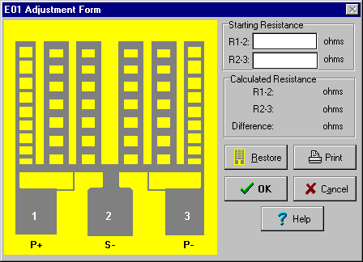

Getting Started
Step 5
Adjusting Resistors
Enter the starting resistance R1-2 as 1.44 ohms. Enter the same 1.44 ohms for R2-3. Use the Tab key to move between EDIT FIELDS.

Begin cutting the second ladder from the left (between P+ and S-), starting on the bottom ladder rung. Cutting is accomplished by placing the mouse cursor on the center of the ladder rung to be cut and pressing the left mouse button. Continue cutting upward on the same ladder until you achieve a difference in resistance (between R1-2 and R2-3) equal to 0.69 ohms. This should be 5 cuts. If you cut too much, just click on any cut rung to restore it. You may also press the Restore BUTTON to start over. To achieve the calculated, desired resistance of 0.70 ohms, additionally cut the second rung of the first ladder from the left. When a difference of 0.70 ohms is achieved, press the OK BUTTON.